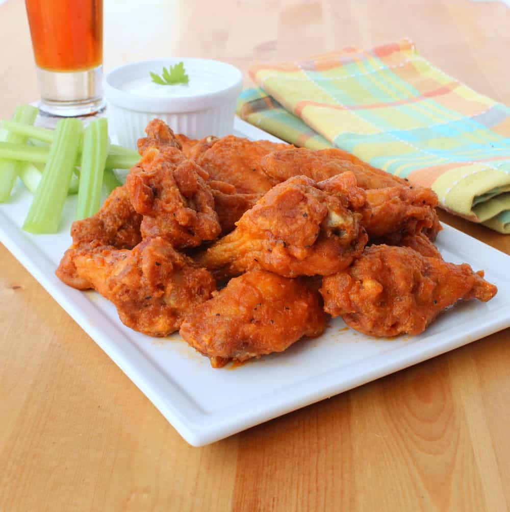

Buffalo Wings Recipe

Description
With this recipe, you can make the perfect Buffalo Chicken Wings! We recommend a mix of Drumettes and Wing Flats for this recipe, but if you're cooking for yourself, you can freely go with your preference. You can make this however hot you would like, just pick a hot sauce to your preference.
Ingredients:
- 1 1/2lb chicken wings
- 1/2 cup all-purpose flour
- 1/4 tsp smoked paprika
- 1/4 tsp kosher salt
- 1/3 cup unsalted butter
- 1/3 cup hot sauce
- 1/4 tsp ground black pepper
- 1/4 tsp garlic powder
- Vegetable oil (for frying)
- Blue cheese dressing (for dipping)
- Celery (cut into strips)
Steps:
- In a small bowl, mix together the flour, paprika, cayenne pepper, and salt.
- Place the wings into a large bowl and then sprinkle the flour mixture over them, tossing the wings with a large spoon, making sure the wings are fully coated.
- Place the wings on a baking sheet lined with a baking rack and refrigerate for at least 30 minutes.
- Meanwhile, heat the oil in a large skillet, or a deep fryer, to 350° to 360°F.
- In a separate small saucepan, combine the butter, hot sauce, garlic powder, and ground pepper over low heat. Stir until the butter has melted and the ingredients are well blended.
- Carefully place the wings into the hot oil and fry them for 10 to 11 minutes, or until they are crispy and golden.
- Remove the wings to a plate with lined paper towels to drain.
- Add the cooked wings to a large bowl.
- Add the prepared wing sauce, and gently stir, coating all the wings evenly.
- Place on your serving platter along with blue cheese dressing, and cut celery. Serve at once!
Source of this recipe.